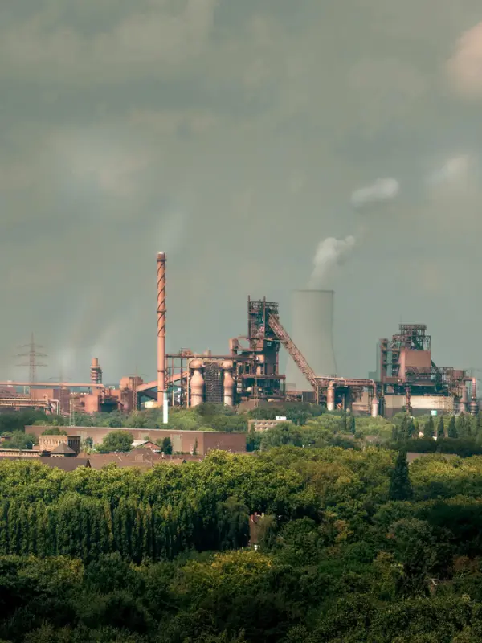
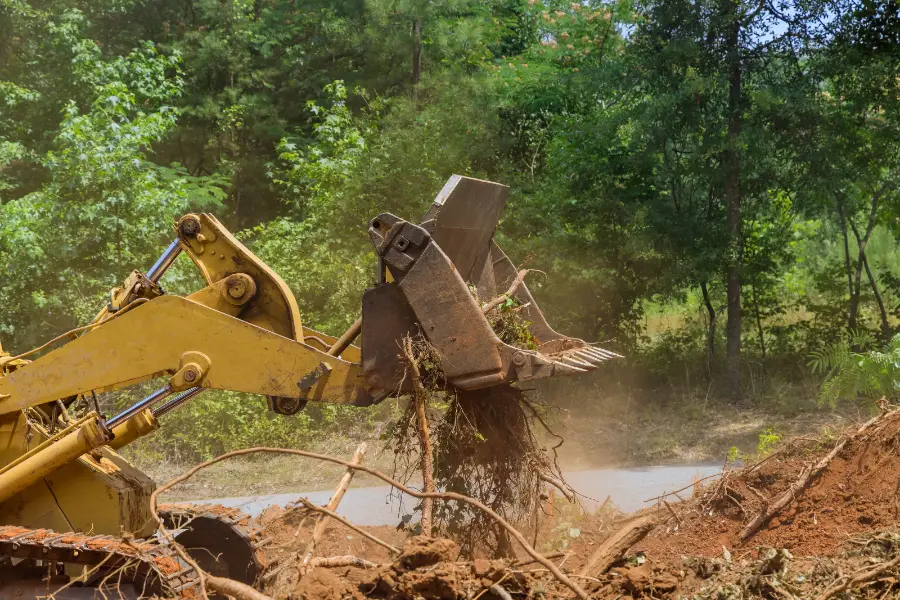

A Matemática do El Niño

Joelma Iamac Nomura
de Matemática III
UFABC
 Role para explorar ↓
Role para explorar ↓
Resolução de problemas


Fenômenos periódicos
O El Niño volta em intervalos irregulares de 2 a 7 anos. Mova o controle para ver quantos episódios cabem em 20 anos.
Contextualizaçãodo plano


O que é El Niño?
É o aquecimento anormal das águas do Pacífico equatorial. Ele muda os ventos e a chuva em boa parte do planeta, inclusive no Brasil.
Secas recordes no Amazonas e cheias no Sul viram dados que os alunos medem, comparam e modelam.


El Niño ou La Niña?
El Niño
Um fenômeno que se repete
O ONI mede quanto o Pacífico está mais quente que o normal. Acima de +0,5 °C, é El Niño. Em agosto de 2026, ele já está acima de todos os El Niños fortes recentes no mesmo mês.
Fonte: NOAA CPC, Oceanic Niño Index. Passe o cursor ou toque no gráfico.
Efeitos no Brasil · toque para abrir
Plano deaula
Plano de aula
Ensino Médio · funções exponenciais e logarítmicas
Objetivo geral: entender, com funções exponenciais e logarítmicas, como a água dos grandes rios do Brasil muda em anos de El Niño, e saber até onde essas contas valem.
Objetivos específicos
- Transformar a cota (altura na régua) em vazão, e o contrário.
- Calcular em quanto tempo um reservatório perde metade da água.
- Usar a escala logarítmica para ver se algo cresce em ritmo constante.
- Ler o resultado como "quantas vezes" a vazão muda.
Habilidades da BNCC
EM13MAT304Resolver e elaborar problemas com funções exponenciais, interpretando a variação das grandezas.
EM13MAT305Resolver e elaborar problemas com funções logarítmicas, interpretando a variação das grandezas.
Metodologia
Resolução de problemas segundo Polya e verbos da Taxonomia de Bloom para cada atividade.
Recursos
Portal SACE, boletins hidrológicos, computadores ou celulares, planilhas eletrônicas, calculadora científica e o site do grupo.
As etapas de Polya na aula · escolha uma etapa
Atividade 01
Investigar os níveis dos rios no portal SACE e levantar uma hipótese.
Consultar · Identificar · Comparar · OrganizarAquecimento
Potência, logaritmo, e e ln; tutorial da calculadora.
Lembrar · EntenderRégua e vazão
Ajustar a vazão do Rio Uruguai com dois registros.
AplicarMeia-vida
Queda exponencial em Sobradinho e Balbina.
Aplicar · AnalisarEscala log
O ONI cresce em ritmo constante?
AnalisarDesafio β
Ligar o ONI à vazão e discutir os limites do modelo.
Avaliar · CriarAtividadesdo plano
Recursos
Portal SACE, boletins hidrológicos, computadores ou celulares, planilhas eletrônicas e calculadora. (site)
Entregas
Dados organizados, identificação dos valores máximos e mínimos, observações sobre o comportamento do rio e hipótese inicial do grupo.
Atividade · marque os passos
Atividade 01
Investigando o comportamento dos níveis dos rios
Polya: compreensão do problema e elaboração do plano
Bloom: Consultar, Identificar, Comparar, Organizar.
Objetivo: investigar os níveis dos rios ao longo do tempo, identificando possíveis padrões de variação.

Apresentaçãodo site

Aplicaçãosimplificada
Aplicação simplificada
Mova os controles ou toque nos gráficos. Peçam para a turma chutar antes de revelar a resposta.
A régua do rio e a vazão
Rio Uruguai em Uruguaiana (RS) · registros do SGB
Q = 10.942 · e^(0,1725·(h − 7,5))Quanto tempo um reservatório aguenta?
Queda exponencial e meia-vida · dados do ONS
Referências bibliográficas
Rascunho: o grupo deve conferir antes de entregar- ANDERSON, L. W.; KRATHWOHL, D. R. (org.). A taxonomy for learning, teaching, and assessing: a revision of Bloom's taxonomy of educational objectives. New York: Longman, 2001.
- BRASIL. Ministério da Educação. Base Nacional Comum Curricular. Brasília: MEC, 2018.
- POLYA, G. A arte de resolver problemas: um novo aspecto do método matemático. Rio de Janeiro: Interciência, 1995.
- NOAA CLIMATE PREDICTION CENTER. Oceanic Niño Index (ONI). Dados até jul–set de 2026.
- SERVIÇO GEOLÓGICO DO BRASIL (SGB). Sistema de Alerta de Eventos Críticos (SACE) e boletins hidrológicos.
- OPERADOR NACIONAL DO SISTEMA ELÉTRICO (ONS). Dados hidrológicos: volumes dos reservatórios.
- INSTITUTO NACIONAL DE METEOROLOGIA (INMET). Painel El Niño 2026–2027.
- CAMILLONI, I.; BARROS, V. Estudo sobre as cheias do Rio Paraná e o El Niño, 2000. (completar a referência)
Obrigado(A)!

Perguntas? Experimentem o site: as missões têm respostas para conferir na hora.
Ana Carolina · Camila Lourenço · Gabriel Matos · Júlia Campos · Kauan Franca · UFABC